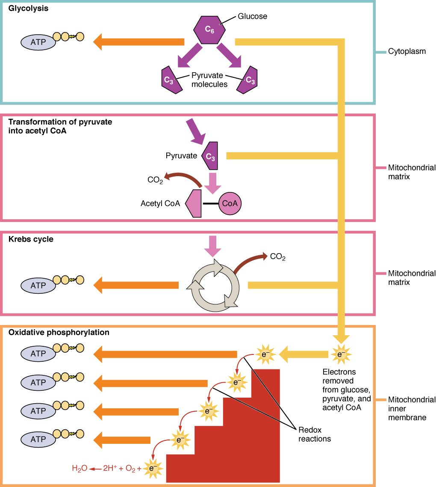

How cells make ATP
1Why this matters
Mr. Hale, 58, is carried out of a house fire, confused and breathing fast. His blood carries plenty of oxygen, yet his blood lactate is very high. Burning plastics released cyanide, which blocks the last step of the chain his mitochondria use to make ATP. His cells have oxygen but cannot use it, so they fall back on a route that makes ATP without it.
2What this builds on
3Quick check before you start
1. When NAD+ picks up electrons and becomes NADH, what has happened to it?
- It has been oxidized
- It has been reduced
- It has been hydrolyzed
Show the answer
Reduction is the gain of electrons. NAD+ gains two electrons (with an H+) and becomes NADH. The molecule that gave up the electrons was oxidized.
- It has been oxidized:
- Correct: It has been reduced:
- It has been hydrolyzed:
2. What happens when a cell hydrolyzes ATP?
- ATP splits into ADP and phosphate, releasing energy the cell uses for work
- ATP joins with ADP to store energy
- ATP gains a fourth phosphate group
Show the answer
Hydrolysis splits off the outer phosphate, leaving ADP and phosphate and releasing energy for cell work. Cells then rebuild ATP from ADP and phosphate using energy from fuel.
- Correct: ATP splits into ADP and phosphate, releasing energy the cell uses for work:
- ATP joins with ADP to store energy:
- ATP gains a fourth phosphate group:
3. Which feature of a mitochondrion greatly increases the area where ATP-making proteins sit?
- Its smooth outer membrane
- The ribosomes on its surface
- The folds of its inner membrane, the cristae
Show the answer
The inner membrane folds into cristae. The protein complexes that make most ATP sit in that membrane, so more folds mean more of them.
- Its smooth outer membrane:
- The ribosomes on its surface:
- Correct: The folds of its inner membrane, the cristae:
4Anatomy

With labels hidden, select a box to reveal its label.
5How it works, step by step
- Enzymes in the cytosol split glucose by glycolysis.Each glucose becomes two pyruvate, with a net gain of 2 ATP and 2 NADH.
- With oxygen available, pyruvate enters the mitochondrion and is taken apart by the citric acid cycle.Its carbon leaves as CO2, and its electrons are loaded onto NADH and reduced FAD.
- NADH and reduced FAD hand their electrons to the electron transport chain in the inner membrane.The energy released pumps H+ across the inner membrane, and oxygen accepts the electrons at the end, forming water.
- The H+ gradient drives H+ back across the membrane through an ATP-making enzyme.About 26–28 more ATP are made, for a total of about 30–32 ATP per glucose.
- If oxygen is missing or the chain is blocked, NADH cannot be oxidized and NAD+ runs short.Pyruvate takes the electrons from NADH and becomes lactate, restoring NAD+, so glycolysis continues at only 2 ATP per glucose.
6Core concepts
7A common mistake
The wrong idea: Lactic acid is a toxic waste product that builds up in tired muscles and causes the soreness you feel a day or two after hard exercise.
What actually happens: Lactate is a fuel, not a waste. It leaves the cells that make it, and heart muscle and other cells turn it back into pyruvate and oxidize it, while the liver rebuilds glucose from it. Blood lactate is back to its resting level within an hour or so after exercise, so it cannot cause soreness that peaks one to two days later. That delayed soreness comes from small injuries inside the muscle and their repair. Converting pyruvate to lactate is what lets glycolysis keep running when oxygen is short, because it regenerates NAD+.
8Check yourself
Anything you miss goes into your review queue.
1. A mature red blood cell carries oxygen all day, yet it turns every glucose it uses into lactate. What explains this?
- It has no mitochondria, so pyruvate cannot be broken down with oxygen
- Its oxygen-carrying protein holds oxygen too tightly to use
- Its glycolysis enzymes work only when oxygen is absent
- It makes lactate so that it can save its oxygen for other tissues
Show the answer
The citric acid cycle and the electron transport chain are in mitochondria, and a mature red blood cell has none. It can run only glycolysis, and it converts pyruvate to lactate to regenerate NAD+ so glycolysis can continue.
- Correct: It has no mitochondria, so pyruvate cannot be broken down with oxygen: Correct. No mitochondria means no aerobic stages, whatever oxygen is present.
- Its oxygen-carrying protein holds oxygen too tightly to use: How tightly the red cell's protein binds oxygen is not the limit. Even with free oxygen inside, the cell has no electron transport chain to use it.
- Its glycolysis enzymes work only when oxygen is absent: Glycolysis does not use oxygen, so oxygen neither turns it on nor off. It runs in cells with plenty of oxygen as well.
- It makes lactate so that it can save its oxygen for other tissues: This gives a purpose, not a mechanism. The cell makes lactate because it lacks the organelle for the aerobic stages.
2. A 58-year-old man is rescued from a house fire. His blood carries plenty of oxygen, but his blood lactate is very high. Cyanide from burning plastics has blocked the final complex of his electron transport chain. What best explains the high lactate?
- Cyanide binds the glycolysis enzymes in his cytosol and makes them work much faster than usual
- Smoke has stopped his red blood cells from delivering oxygen to every tissue in his body
- Blocked electron transport leaves NADH unoxidized, so cells make lactate to regenerate NAD+
- Cyanide turns pyruvate into lactate inside the mitochondrion
Show the answer
With the last complex blocked, electrons cannot pass to oxygen. The chain stops, NADH cannot give up its electrons, and the citric acid cycle stalls. NAD+ runs short, so cells convert pyruvate to lactate to regenerate it, and glycolysis becomes their only ATP source. Lactate pours into the blood even though oxygen is present.
- Cyanide binds the glycolysis enzymes in his cytosol and makes them work much faster than usual: Glycolysis does speed up, but because ATP falls, not because cyanide acts on its enzymes. Cyanide's target is the electron transport chain.
- Smoke has stopped his red blood cells from delivering oxygen to every tissue in his body: His blood carries plenty of oxygen. The problem is that his cells cannot use it.
- Correct: Blocked electron transport leaves NADH unoxidized, so cells make lactate to regenerate NAD+: Correct. The block stops NADH oxidation, and lactate production takes over the job of regenerating NAD+.
- Cyanide turns pyruvate into lactate inside the mitochondrion: Pyruvate becomes lactate in the cytosol, not in the mitochondrion, and cyanide does not catalyze that reaction.
3. A volunteer breathes oxygen gas made with a heavy, traceable form of oxygen atom. In which product of her cellular respiration does the traceable oxygen first appear?
- The carbon dioxide she breathes out
- Lactate in her blood
- Pyruvate in her cells
- Water made in her mitochondria
Show the answer
O2 is used only at the end of the electron transport chain. There each O2 accepts four electrons and four H+ and becomes two water molecules. The oxygen atoms in CO2 come from glucose and from water used in the citric acid cycle, not from the O2 you breathe.
- The carbon dioxide she breathes out: This is the common mistake. CO2 is made in the citric acid cycle and as pyruvate loses a carbon, steps that take their oxygen atoms from glucose and water, not from O2.
- Lactate in her blood: Lactate is made from pyruvate in the cytosol, a step that uses no oxygen gas.
- Pyruvate in her cells: Pyruvate comes from splitting glucose. Glycolysis uses no O2, so the label cannot enter it.
- Correct: Water made in her mitochondria: Correct. Oxygen is the final electron acceptor and ends up in water.
4. A student outlines aerobic respiration. Which step contains the error?
- Glycolysis in the cytosol splits glucose into two pyruvate, netting 2 ATP.
- In the mitochondrion, each pyruvate loses a carbon as CO2 and the citric acid cycle breaks down what remains.
- NADH and reduced FAD give their electrons to the electron transport chain.
- Oxygen accepts the electrons at the start of the chain and is converted into CO2.
Show the answer
Oxygen is the final electron acceptor, at the end of the chain, and it becomes water. CO2 comes from the carbons of glucose, released earlier as pyruvate is broken down.
- Glycolysis in the cytosol splits glucose into two pyruvate, netting 2 ATP.: This step is right. Glycolysis runs in the cytosol and nets 2 ATP per glucose.
- In the mitochondrion, each pyruvate loses a carbon as CO2 and the citric acid cycle breaks down what remains.: This step is right. Pyruvate breakdown and the citric acid cycle release the carbons as CO2.
- NADH and reduced FAD give their electrons to the electron transport chain.: This step is right. The electron carriers feed the chain.
- Correct: Oxygen accepts the electrons at the start of the chain and is converted into CO2.: This is the error. Oxygen accepts electrons at the end of the chain and forms water, not CO2.
5. Converting pyruvate to lactate makes no ATP. Why, then, does it raise a cell's ATP output when oxygen is missing?
- It regenerates the NAD+ that glycolysis needs to keep running
- Lactate is itself a form of stored ATP
- It moves pyruvate into the mitochondrion faster
- It releases CO2, which drives the electron transport chain
Show the answer
Glycolysis needs NAD+ to accept electrons, and a cell holds only a little. Without oxygen, NADH cannot give its electrons to the chain. Passing them to pyruvate turns NADH back into NAD+, so glycolysis can keep netting 2 ATP per glucose.
- Correct: It regenerates the NAD+ that glycolysis needs to keep running: Correct. The lactate step recycles NAD+.
- Lactate is itself a form of stored ATP: Lactate is a three-carbon fuel molecule, not ATP. It can be turned back into pyruvate later.
- It moves pyruvate into the mitochondrion faster: The lactate step happens in the cytosol and keeps pyruvate there. It does not move anything into the mitochondrion.
- It releases CO2, which drives the electron transport chain: Pyruvate and lactate both have three carbons; no CO2 is released. And CO2 does not drive the electron transport chain.
6. Two days after her first hard leg workout in months, a 30-year-old woman has sore thighs. Her friend tells her lactic acid is still trapped in her muscles. Which response is most accurate?
- Her friend is right: lactate stays in muscle until the soreness passes
- Lactate was cleared within an hour or so; the soreness comes from small injuries inside the muscle and their repair
- The soreness means her muscles made no lactate at all during the workout
- Lactate turned into CO2 that is still held inside the thigh muscles, and this trapped gas is what now causes the pain
Show the answer
Lactate leaves muscle quickly. Heart muscle and other cells oxidize it, and the liver rebuilds glucose from it, so blood lactate is back to resting within an hour or so. Soreness that peaks one to two days later comes from small injuries inside the muscle and the repair that follows.
- Her friend is right: lactate stays in muscle until the soreness passes: Lactate does not stay trapped. It returns to resting levels within an hour or so, long before the soreness peaks.
- Correct: Lactate was cleared within an hour or so; the soreness comes from small injuries inside the muscle and their repair: Correct. The timing rules out lactate; fiber damage and repair explain delayed soreness.
- The soreness means her muscles made no lactate at all during the workout: Hard exercise does raise lactate production. It is simply cleared long before the soreness appears.
- Lactate turned into CO2 that is still held inside the thigh muscles, and this trapped gas is what now causes the pain: Lactate can be turned back into pyruvate and oxidized, but CO2 diffuses out and is breathed away; it does not cause soreness days later.
7. The cells of your heart wall pack thousands of mitochondria. Which statement best explains why this matters for how they make ATP?
- Glycolysis happens inside mitochondria, so more of them split glucose faster
- Mitochondria store ready-made ATP that heart cells draw on during each beat
- Mitochondria run the aerobic stages, which yield about 15 times more ATP per glucose
- Mitochondria make glucose for the heart from the oxygen in blood
Show the answer
The citric acid cycle and electron transport chain run in mitochondria, and together they raise the yield from 2 ATP per glucose to about 30–32. A cell that works nonstop, like a heart cell, has many mitochondria and depends on these aerobic stages.
- Glycolysis happens inside mitochondria, so more of them split glucose faster: Glycolysis runs in the cytosol, not in mitochondria.
- Mitochondria store ready-made ATP that heart cells draw on during each beat: Cells hold only a small amount of ATP and rebuild it constantly. Mitochondria make ATP; they are not storage tanks.
- Correct: Mitochondria run the aerobic stages, which yield about 15 times more ATP per glucose: Correct. More mitochondria mean more capacity for the high-yield aerobic stages.
- Mitochondria make glucose for the heart from the oxygen in blood: Mitochondria break fuel down; they do not build glucose, and oxygen is not a raw material for glucose.
9Summary
Cellular respiration breaks down fuel inside cells and captures the energy as ATP. Glycolysis splits glucose into two pyruvate in the cytosol, netting 2 ATP and 2 NADH without oxygen. With oxygen, pyruvate enters the mitochondrion, and the citric acid cycle releases its carbon as CO2 while loading NADH and reduced FAD. The electron transport chain in the inner membrane passes their electrons to oxygen, forming water, and uses the energy to pump H+; H+ flowing back makes most of the ATP. The total is about 30–32 ATP per glucose, a range because the ratios are not whole numbers and vary with the cell. Without oxygen, pyruvate becomes lactate, which regenerates NAD+ and keeps glycolysis going at 2 ATP per glucose. The metabolism chapter covers each stage in full.